and Mosaicing
All three sets are frames pulled from phone videos where I turned in place. I picked sharp frames with about 40 to 65% overlap and skipped stretches where auto exposure jumped. Distant scenes help, since a little hand movement causes almost no parallax when everything is far away.
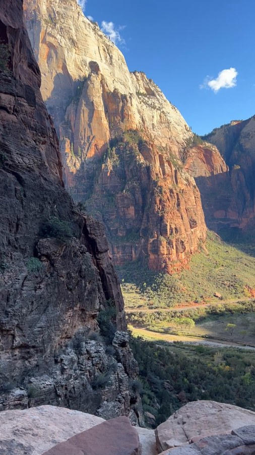
0.5 s
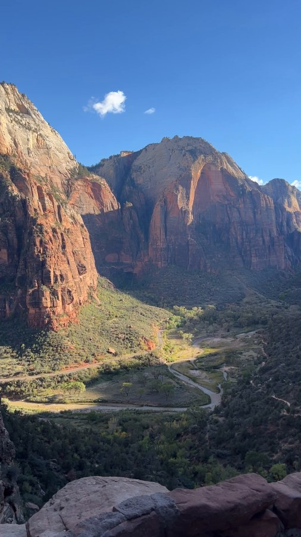
2.5 s
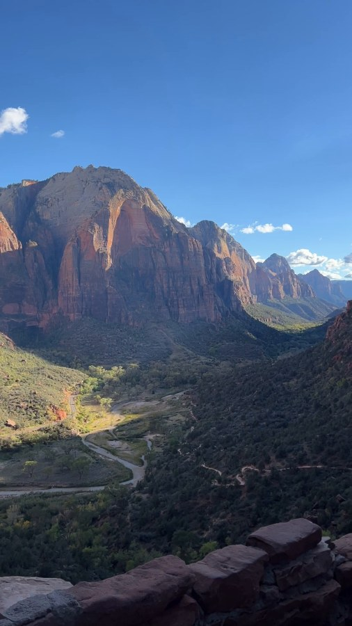
4.0 s
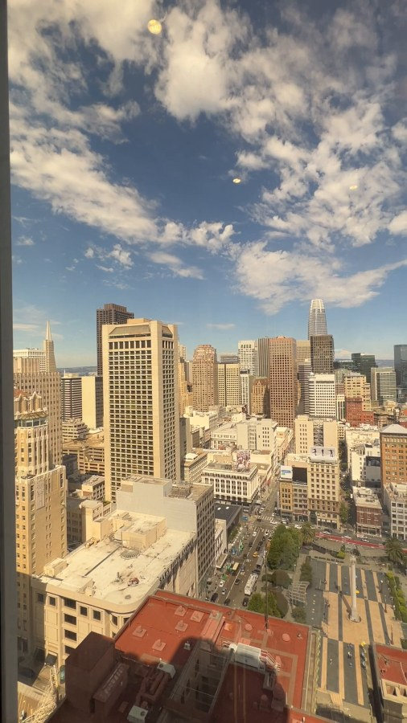
3.2 s
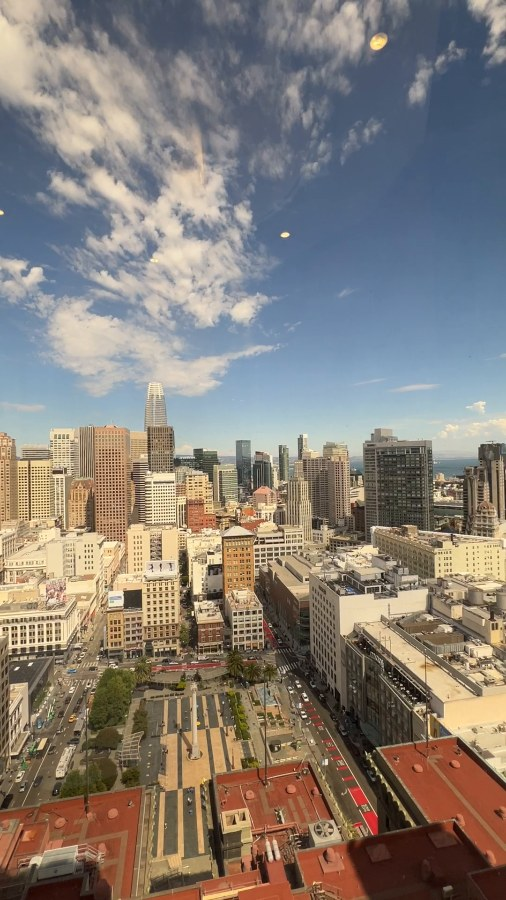
5.2 s
This one was shot through a high-rise window. Both frames come from a stretch where the camera stayed behind one pane, so the window frames and the different tints of neighboring panes stay out of the overlap.
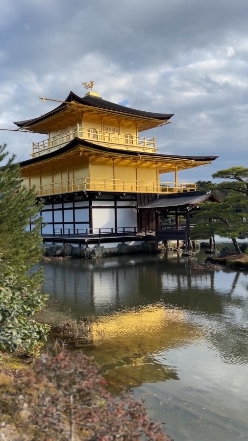
1.5 s
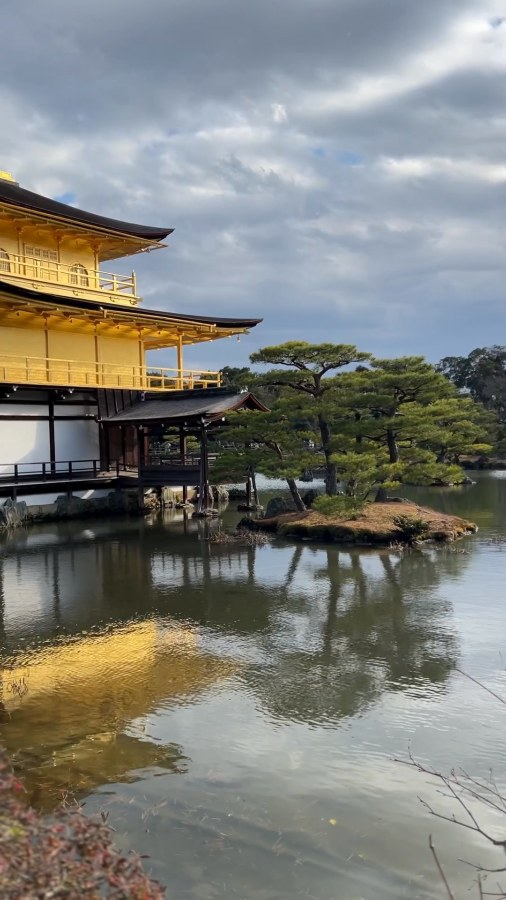
3.5 s
5.5 s
This set has the most foreground, a pine bush, shrubs and bare branches close to the camera, plus a pond whose ripples change between frames. I kept clicked points off all of those.
A homography maps a point p = (x, y, 1) in image 1 to Hp = (x', y', w) in image 2, and dividing by w gives the pixel location. Fixing the bottom right entry to 1 leaves 8 unknowns, a through h. Each point pair gives two equations, but they have the denominator gx + hy + 1 in them. Multiplying it out and moving every term with an unknown to one side makes them linear.
x'(gx + hy + 1) = ax + by + c -> [x y 1 0 0 0 -x'x -x'y] h = x'
y'(gx + hy + 1) = dx + ey + f -> [0 0 0 x y 1 -y'x -y'y] h = y'Stacking two rows per pair gives A h = b with A of size 2n × 8. Four pairs would solve it exactly, but clicks are off by a pixel or two, so I click 10 to 12 pairs and solve the overdetermined system with least squares.
As a check, I made up an H, sent 10 random points through it and recovered it to within 1.4e-10. With 1 px of noise added to the targets, the mean error against the true points was 0.48 px, below the noise itself because least squares averages over 20 equations.
The middle frame is the reference for Zion and Kinkaku-ji, so each side frame gets its own H into the middle. SF only has two frames, so the left one maps into the right.
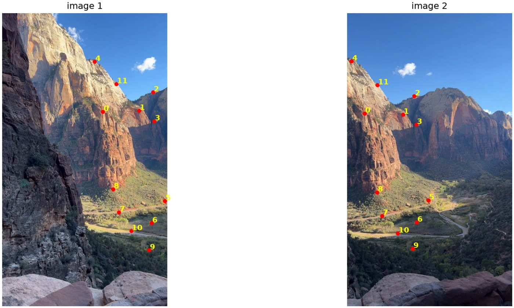
12 pairs
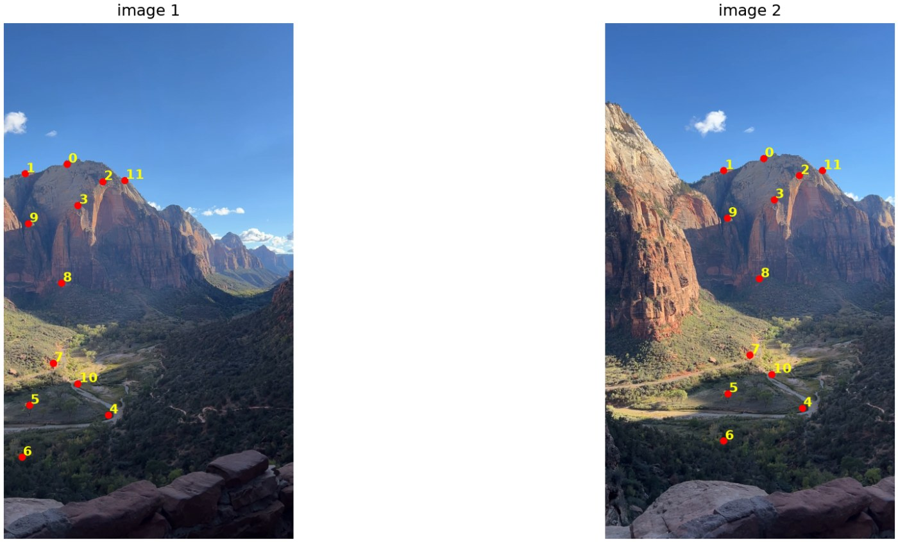
12 pairs
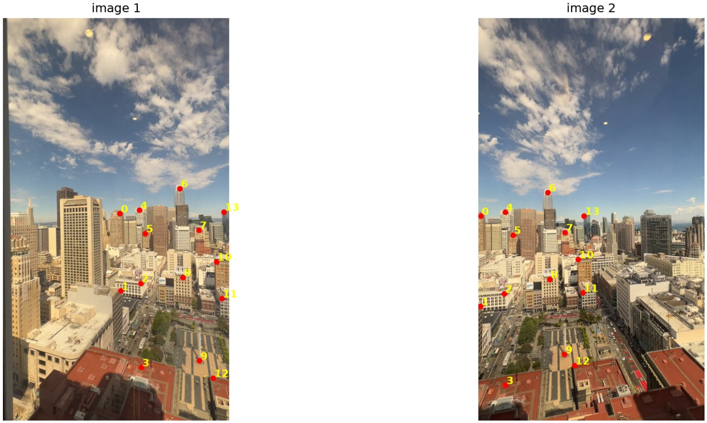
12 pairs
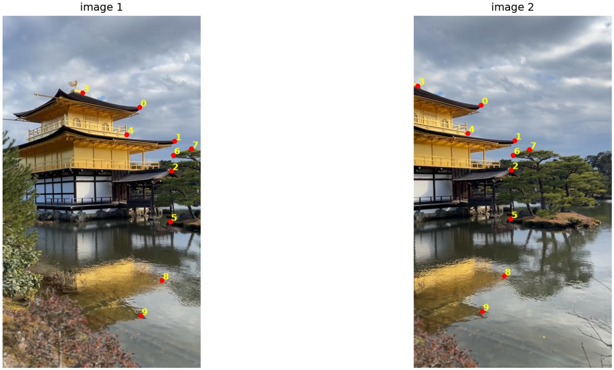
10 pairs
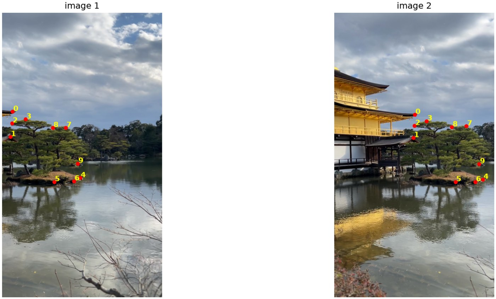
10 pairs
A is 24 × 8 for 12 pairs. These are the rows from the first two pairs. The g and h columns are much bigger than the rest because they multiply two pixel coordinates.
A[:4] =
[[ 657.47 644.91 1. 0. 0. 0. -74971.84 -73540.11]
[ 0. 0. 0. 657.47 644.91 1. -430755.96 -422529.84]
[ 893.41 637.22 1. 0. 0. 0. -326413.90 -232813.36]
[ 0. 0. 0. 893.41 637.22 1. -592210.55 -422391.72]]
b[:4] = [114.03 655.17 365.36 662.87]zion left -> middle zion right -> middle
[[ 1.31694 0.03227 -760.52976] [[ 0.87877 0.02352 366.98805]
[ 0.20096 1.22195 -150.06127] [-0.12975 1.03949 -17.00874]
[ 0.00025 0.00001 1. ]] [-0.00014 0.00005 1. ]]
sf left -> right
[[ 2.12053 -0.02052 -1143.49607]
[ 1.03367 1.83706 -795.81364]
[ 0.00106 -0.00001 1. ]]
kinkaku-ji left -> middle kinkaku-ji right -> middle
[[ 1.30074 0.02585 -550.26889] [[ 0.67353 0.03853 466.62908]
[ 0.19239 1.25969 -186.58912] [-0.29697 0.94336 73.81775]
[ 0.00023 0.00005 1. ]] [-0.00031 0.00002 1. ]]| Pair | pairs | mean error | max error | focal length | rotation |
|---|---|---|---|---|---|
| zion left → middle | 12 | 6.67 px | 11.37 px | 1610 px | 18.8° |
| zion right → middle | 12 | 3.86 px | 7.95 px | 1520 px | 12.9° |
| sf left → right | 12 | 2.11 px | 3.75 px | 900 px | 31.6° |
| kinkaku-ji left → middle | 10 | 3.62 px | 5.89 px | 1385 px | 15.6° |
| kinkaku-ji right → middle | 10 | 2.82 px | 4.01 px | 1145 px | 22.6° |
Error is the reprojection error of the clicked points. Focal length and rotation come from searching for the f that makes K−1HK closest to a rotation matrix, since a pure camera rotation gives H = KRK−1.
The SF homography has a perspective term g about four times bigger than the others, which first looked like a bad fit. The focal length check explains it. The SF video was shot with a much wider field of view, so the same 520 px shift is a 32° turn instead of about 19°, and a bigger turn means stronger perspective. Its H is actually the closest to a pure rotation of all five. Zion left has the highest error even after re-clicking, and the error is spread across all the points rather than one bad click, which points to video stabilization slightly warping each frame.
Two lessons came out of clicking. Points on water or right at the image edge are unreliable, and removing two of them in Kinkaku-ji right dropped its error from 7.3 to 2.8 px. And a low error only means H fits the clicked points. My first SF points sat in a narrow strip, so H fit them but could bend freely everywhere else.
Warping uses inverse mapping. The four image corners go through H to find the output box, since a homography keeps lines straight and the warped image can't leave the quadrilateral they form. Then every output pixel goes back through H−1 to find where it comes from in the source. Each output pixel gets exactly one lookup, so there are no holes. The whole grid is mapped at once with numpy, with no per pixel loops.
The source location is almost never a whole pixel, and the two methods differ only in how they read it. Nearest neighbor rounds to the closest pixel. Bilinear takes the four pixels around the point and blends them by distance, first along x and then along y. Both also return an alpha mask that is 1 where the point landed inside the image, which A.4 uses for blending.
With one photo, the second set of points comes from what I know about the scene. I click the four corners of something rectangular and ask H to send them to a perfect w × h rectangle. The monitor is 16:9, so it gets 800 × 450. For the Glico board I guessed 400 × 700 and checked that the runner came out with normal proportions.
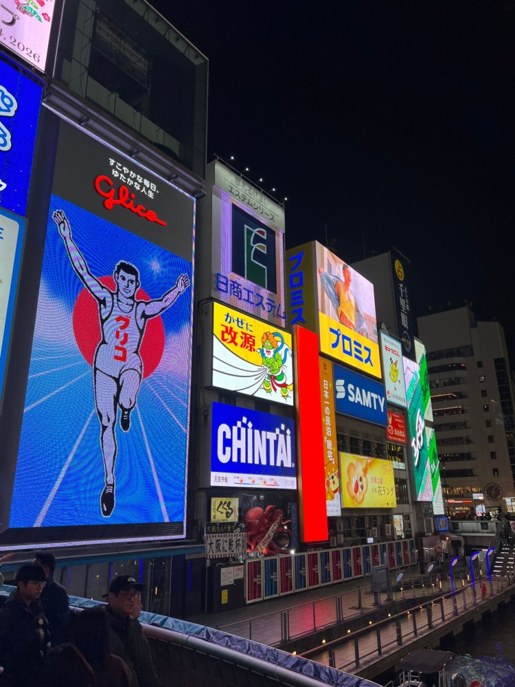
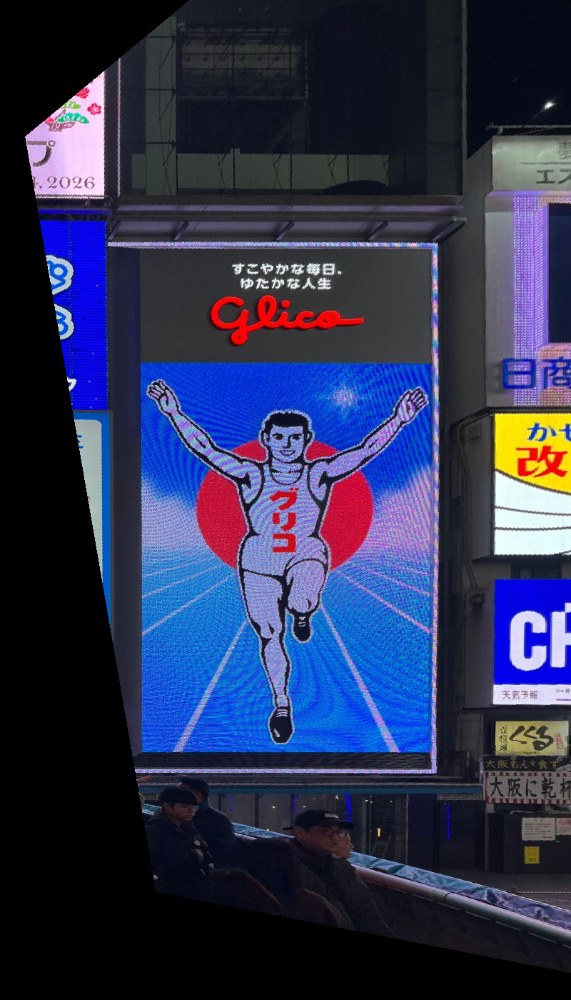
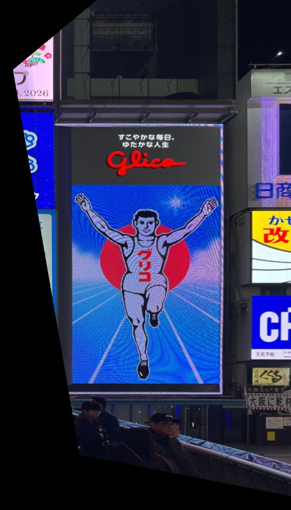
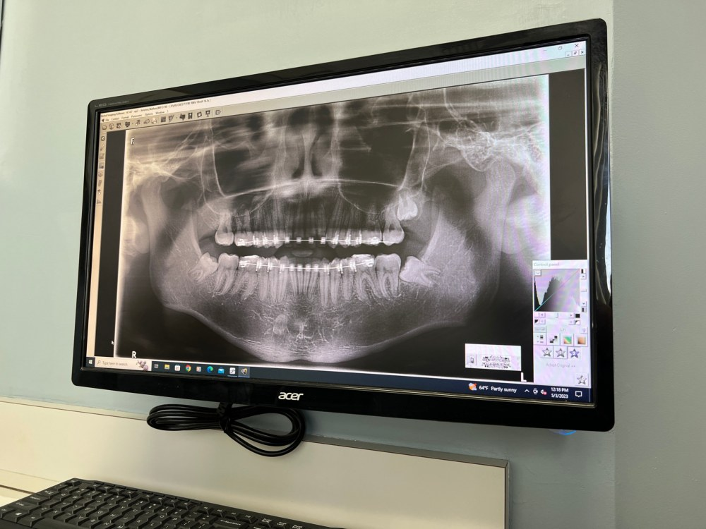
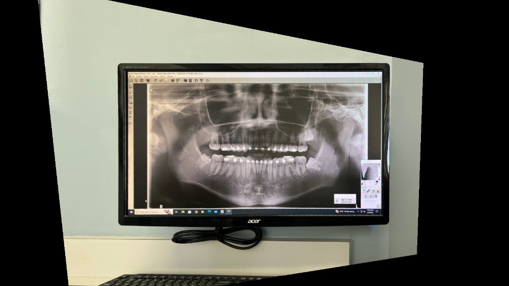
Both come out face-on. The Glico board is an upright rectangle and the runner looks normal. The monitor has a level taskbar and square window corners, and the x-ray is symmetric. The black wedges are output pixels that map outside the original photo.
The first Glico run ran out of memory. The photo looks up at the board, and its top right corner is sky that is almost parallel to the board's surface. Once the board faces the camera that corner is near the vanishing line, its w is 0.06, and dividing by it throws the corner about 15,000 px away. Fitting the output box around every corner asked for a 15,031 × 14,083 image. For rectification I instead keep the target rectangle plus half its size of margin on each side.
nearest | bilinear
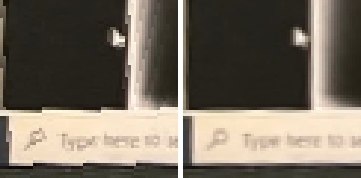
nearest | bilinear
60 × 60 crops from the most stretched parts, enlarged 6× with no smoothing.
| Image | output size | nearest | bilinear |
|---|---|---|---|
| glico | 800 × 1400 | 0.20 s | 0.66 s |
| x-ray | 1600 × 900 | 0.23 s | 0.71 s |
| zion left → middle | 1322 × 2293 | 0.79 s | 2.55 s |
Nearest neighbor copies one pixel per output pixel, so wherever the warp magnifies, each source pixel turns into a block and edges become stair steps, like on the red script and the search bar text. Bilinear is smooth but a little softer. It reads four pixels and does three blends per output pixel, which makes it about 3.2× slower on every image. That is still only a few seconds at most, so I use bilinear for the mosaics.
I warp everything in one shot. The reference frame stays put with H = identity, the canvas is the union of every image's output box, and each image is warped onto that same canvas so they line up pixel for pixel. Every image also gets a feather weight, its distance to the nearest image edge normalized to 1 at the center. The weight is warped with the same H as its image and multiplied by alpha, so it is 0 off the image.
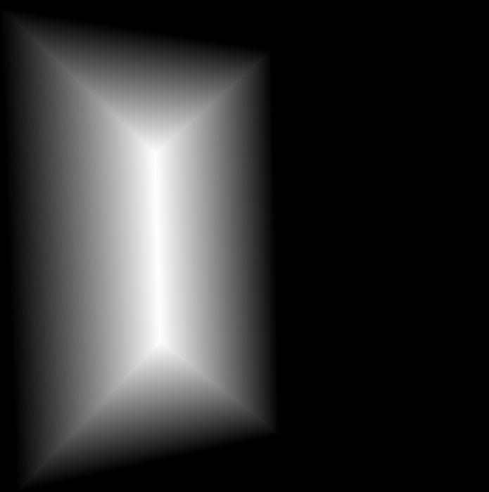
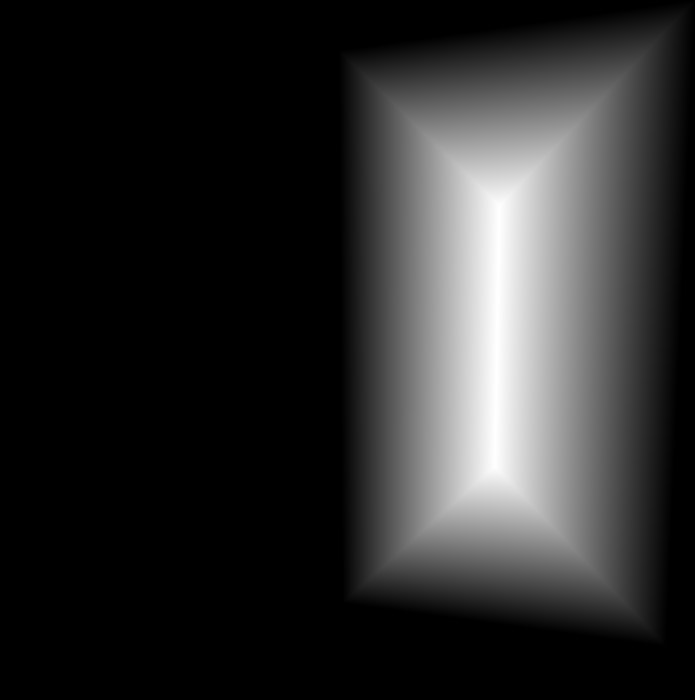
I compare three blends. Overwrite just pastes each image over the last, for reference. Feathering is the weighted average Σwiimi / Σwi. Two-band blending splits each image with a Gaussian blur at σ = 3. The blurry low band is feathered and the high band, the fine detail, comes only from the image with the biggest weight at each pixel. Where only one image covers a pixel the result is exactly that image.
def blend_feather(warped, weights):
total = sum(weights)
weighted = sum(wt[..., None] * im for im, wt in zip(warped, weights))
out = np.zeros_like(weighted)
covered = total > 0
out[covered] = weighted[covered] / total[covered][:, None]
return out
def blend_two_band(warped, weights, sigma=3):
lows = [gaussian_filter(im, sigma=(sigma, sigma, 0)) for im in warped]
highs = [im - low for im, low in zip(warped, lows)]
low_band = blend_feather(lows, weights)
best = np.argmax(np.stack(weights), axis=0)
high_band = np.zeros_like(low_band)
for i, high in enumerate(highs):
high_band[best == i] = high[best == i]
covered = sum(weights) > 0
return (low_band + high_band) * covered[..., None]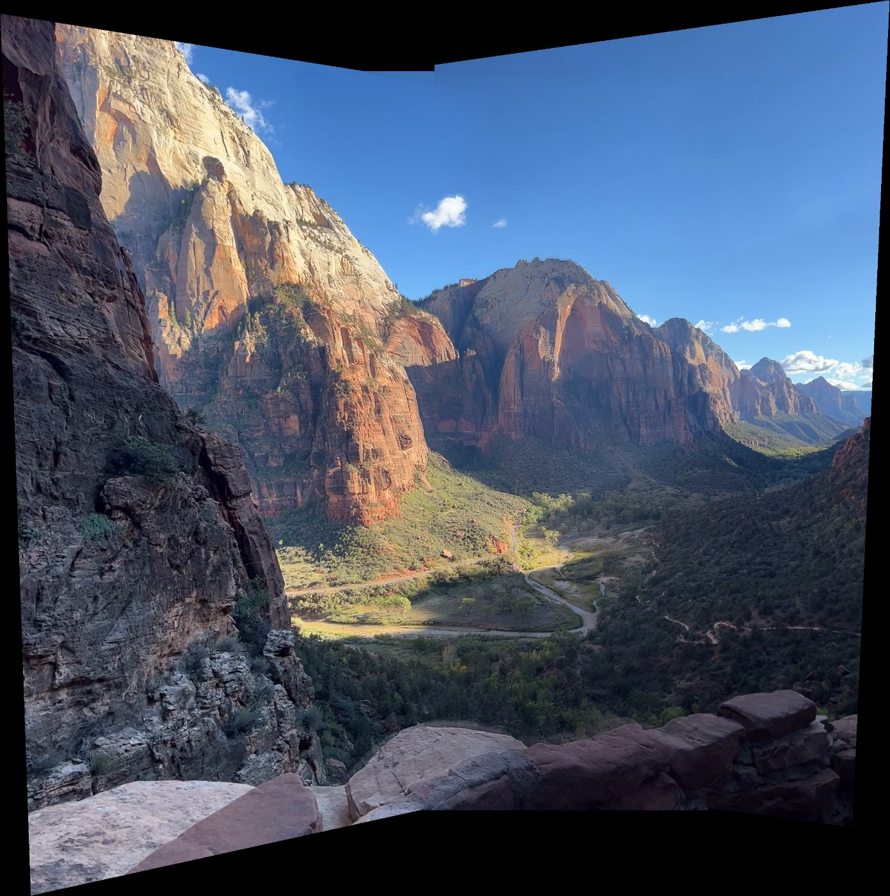
Overwrite leaves a lighter rectangle in the sky where the middle frame starts, because each frame's exposure was a little different. Feathering removes it, but the left overlap is about 6.7 px off, so averaging two shifted copies leaves a faint second cloud and doubled cliff texture. Two-band keeps the smooth sky and takes the detail from one frame, so the cloud and cliff stay sharp.
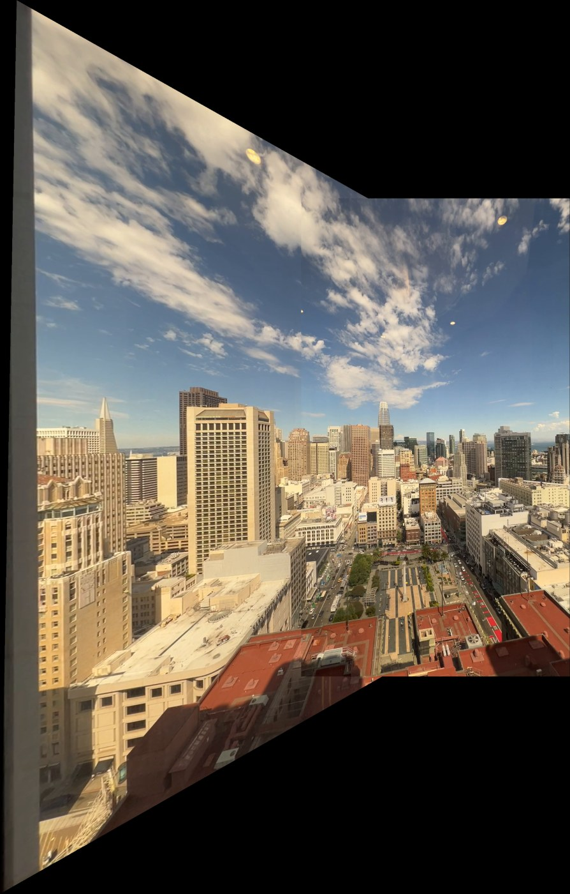
The overlap lines up within about 2 px, so all three blends look close. The left frame is rotated 32° from the reference and a planar mosaic stretches it into a wedge about 3,600 px tall. Flat projection stretches more the further a ray is from the reference's center and blows up at 90°, which is why wide panoramas usually use a cylinder instead. The dark strip on the far left is the window frame.
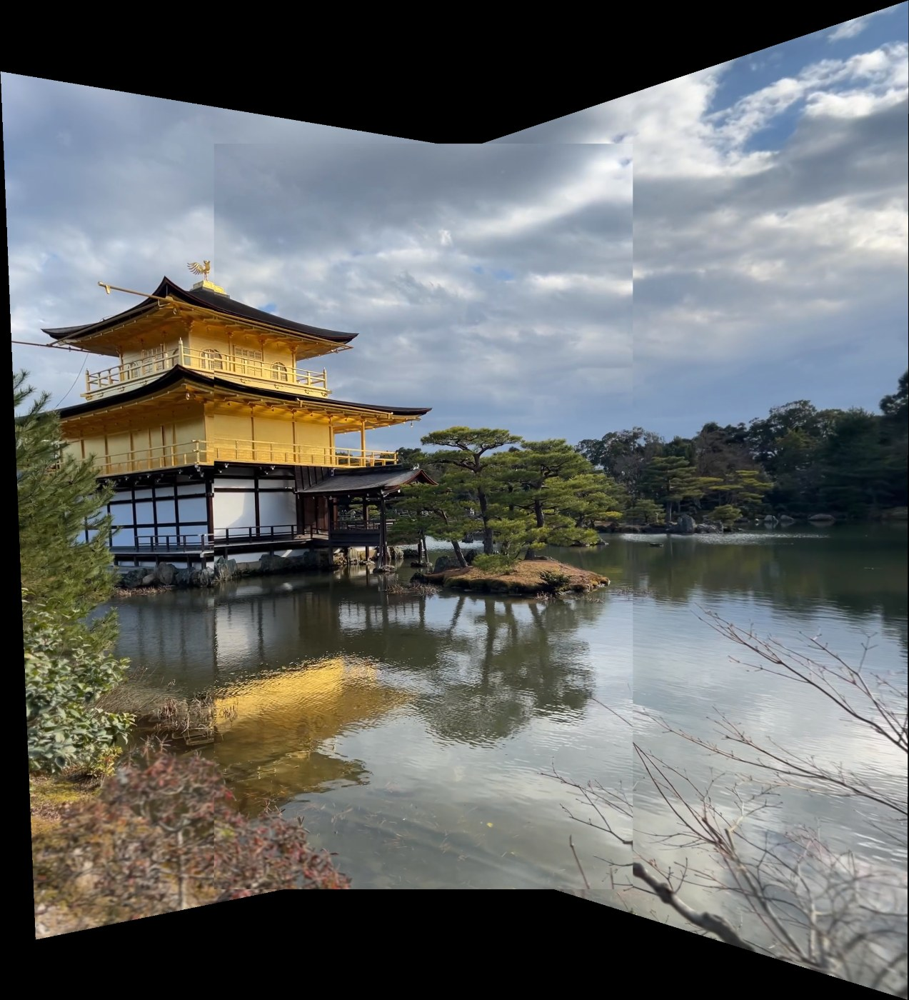
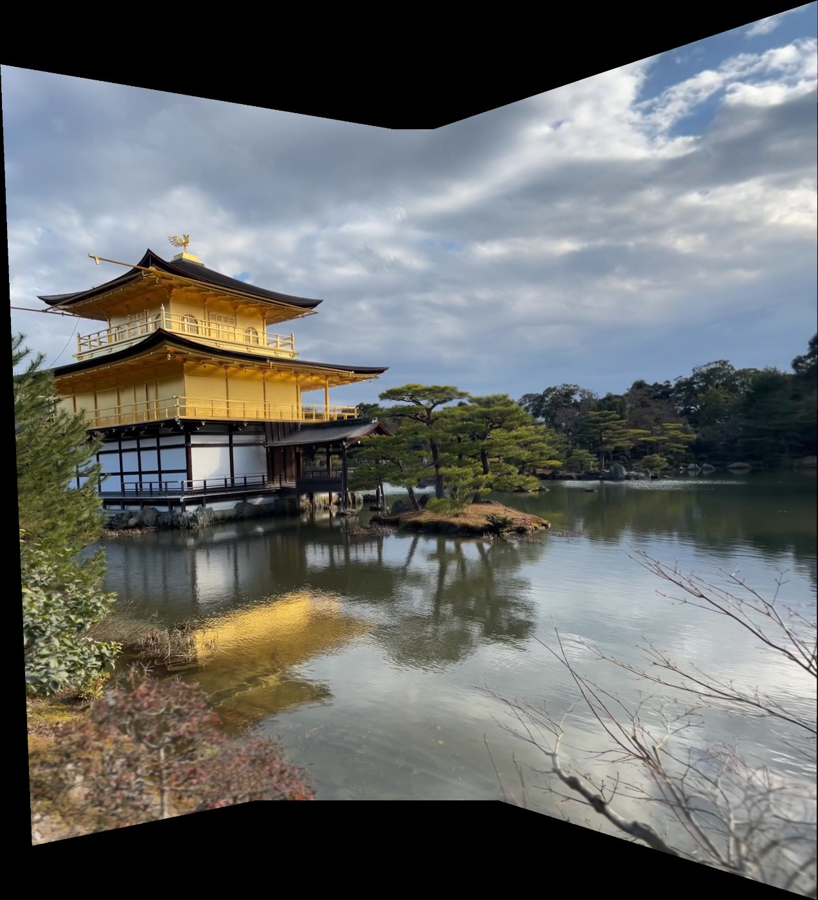
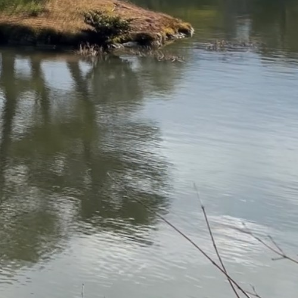
The pavilion, pine island and far trees line up, and feathering removes the bright sky rectangles from overwrite. The bare branches in the lower right are close to the camera, so parallax puts them in a different place in each frame. Feathering averages branch with water and they turn see-through. Two-band takes them from one frame and they stay solid.